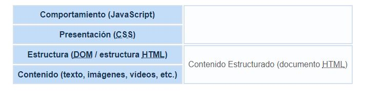
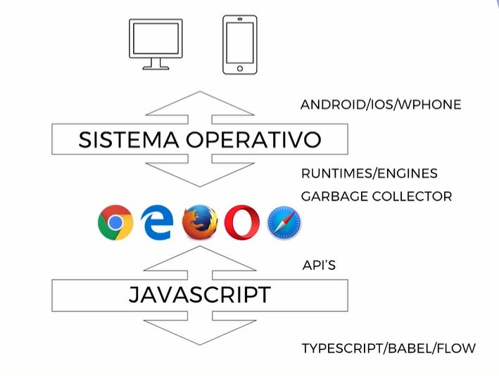

Uno de los objetivos en la programación web es saber escoger la tecnología correcta para tu trabajo. Muchas veces los desarrolladores escogen rápidamente una tecnología favorita, que puede ser JavaScript, Ruby On Rails o PHP y la usan en todas las situaciones. La realidad es que cada tecnología tiene sus pros y sus contras. En general las tecnologías client-side y server-side poseen características que las hacen complementarias más que adversarias. Por ejemplo, cuando añadimos un formulario para recoger información y grabarla en una base de datos, es obvio que tendría más sentido chequear el formulario en el lado del cliente para asegurarnos que la información introducida es correcta, justo antes de enviar la información a la base de datos del servidor. La programación en el lado del cliente consigue que la validación del formulario sea mucho más efectiva y que el usuario se sienta menos frustrado al cubrir los datos en el formulario. Por otro lado el almacenar los datos en el servidor estaría mucho mejor gestionado por una tecnología del lado del servidor (server-side), dando por supuesto que la base de datos estará en el lado del servidor.
Cada tipo general de programación tiene su propio lugar y la mezcla es generalmente la mejor solución. Cuando hablamos de lenguajes de programación en clientes web, nos referimos fundamentalmente a:
HTML. No es en realidad un lenguaje de programación sino un lenguaje de marcado. El HTML define el contenido que va a tener el documento. La función del navegador web va a ser la de leer e interpretar todo este contenido. junto con las etiquetas y visualizarlo al cliente. La gran ventaja del código HTML es que cualquier navegador debería visualizar el contenido de la página web de la misma forma y con el mismo aspecto.
CSS. Define la presentación del documento. CSS es un lenguaje de diseño gráfico y su objetivo es que la página web sea atractiva al usuario. No modifica ni el comportamiento ni el contenido sino el aspecto de la web.
JavaScript. El lenguaje o código JavaScript agrega el contenido dinámico a las páginas web. JavaScript es un verdadero lenguaje de programación a diferencia de HTML y CSS. Actualmente las empresas no programan directamente sobre JavaScript sino basándose en algún framework de éste. Algunos de los más utilizados son: ReactJS, AngularJS, Vue.js
TypeScript: Es un superconjunto de JavaScript que añade tipado estático y otras características útiles, especialmente en proyectos grandes.
WebAssembly: Permite ejecutar código compilado en otros lenguajes (como C, C++) en el navegador con un rendimiento casi nativo.

La siguiente imagen presenta un esquema de las cuatro capas del desarrollo web en el lado del cliente, en la que se puede ver que JavaScript se sitúa en la capa superior gestionando el comportamiento de la página web:

Profundizando más en el caso de JavaScript:

El runtime es la parte del navegador encargada de gestionar todo lo relativo a JavaScript. Debemos saber que:
-
Cada navegador tiene su runtime, e incluso el mismo runtime puede variar en su comportamiento por el sistema operativo del dispositivo donde esté instalado dicho navegador.
-
Los runtimes tienen a su vez mecanismos de optimización (JIT - Just In Time compilation). Su finalidad es intentar hacer más rápida la ejecución de Javascript.